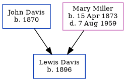

Roy J Davis 1894 -
[ Home ] | [ Calendar ] | [ Surnames Index ] | [ Census Index ] | [ Family History ]The child of John Davis and Mary Miller, Roy Davis, the fourth cousin twice-removed on the mother's side of Nigel Horne, was born in 18941. On Apr 15, 1910, he was living in Lewis, Clay, Indiana, USA1.
Parents
- John Monroe was born in 1870
- Mary Ann was born on Apr 15, 1873
Citations
- US Census 1910 - Findmypast (was age 16 and the son of the head of the household)
Family Tree
Generated by ged2site. Last updated on Jun 11, 2024